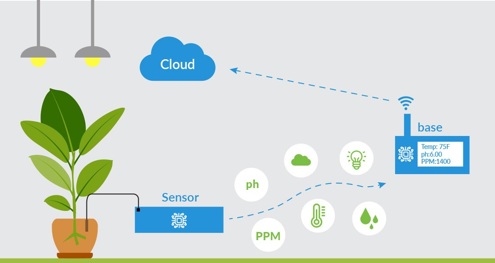

Internet of Things
The Internet of Things in intelligent farming uses different sensors like light, humidity, soil moisture, temperature, crop health monitoring, etc It collects data by farm sensors like autonomous vehicles, wearables, button cameras, robotics, control systems, etc. It provides Aerial and ground-based drones for irrigation, spraying, monitoring & field analysis.. Predictive analytics for rainfall, temperature, soil, humidity, etc.